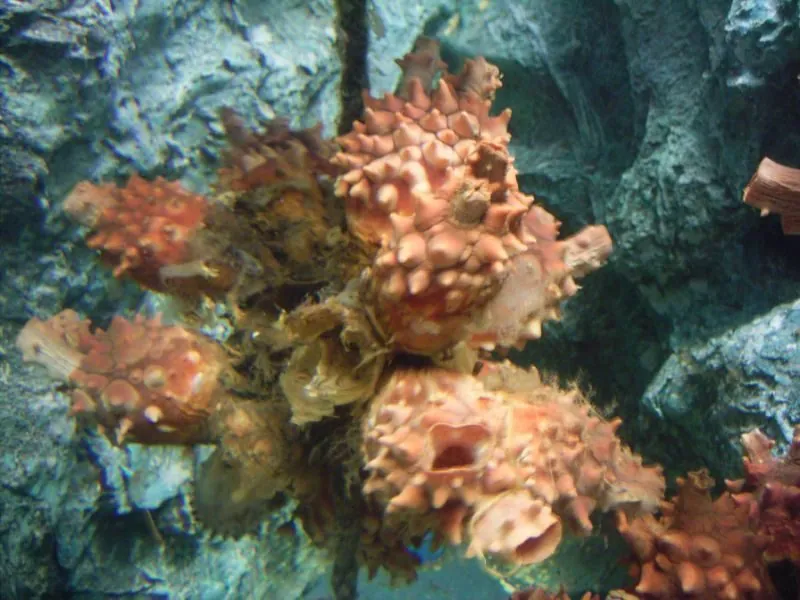

其他无脊椎动物 · 动物界
真海鞘 Halocynthia roretzi

体呈长卵形、外皮坚硬带瘤突的大型海鞘，栖于西北太平洋冷水，是韩国与日本的重要养殖海产品。
- 分类
- 门脊索动物门纲海鞘纲目复鳃目科真海鞘科属真海鞘属
- 栖息环境
- 冷水海域岩礁与沙泥底质，养殖于延绳吊架
- 地理分布
- 西北太平洋，日本北部、朝鲜半岛至俄罗斯远东
- 保护级别
- 重要养殖种类，野生种群受采捕影响
物种志
真海鞘是独居海鞘，体长约十至二十厘米，体呈长卵形，基部有短柄附着。外皮坚硬革质，呈橙红、紫红或黄褐色，表面布满大小不等的瘤状突起，形似一只长满疙瘩的皮囊，也像一枚立着的菠萝。顶端有入水孔和出水孔，孔缘有明显瓣膜，受惊时喷水收缩，把体内的水排出一股。
它分布于西北太平洋的冷水海域，从日本北部、朝鲜半岛到俄罗斯远东，栖息在水深数米至数十米的岩礁和沙泥底质，靠滤食浮游生物为生。它是韩国和日本的重要养殖海产品，在韩国尤其受欢迎，多生食或凉拌，养殖用延绳吊养，周期约一至两年。作为尾索动物，它的幼体有脊索和尾，成体后消失，是研究脊索动物演化的重要材料。
形态与习性
- 体长约十至二十厘米，长卵形
- 外皮坚硬革质，橙红或紫红，密布瘤突
- 水管顶端两孔，受惊喷水收缩
- 食性滤食浮游生物
- 养殖延绳吊养，周期约一至两年
- 演化意义幼体有脊索与尾，成体消失
趣味知识
- 它外皮硬得像塑料，表面疙瘩密布，看着像一枚长在海里的菠萝。
- 韩国人把它切片生吃，口感脆韧，是沿海市场的常见海货。
- 它的幼体像小蝌蚪一样有尾巴和脊索，长大后才变成一袋滤水的囊。